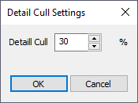
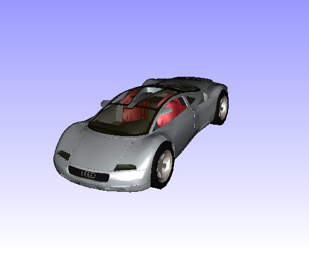
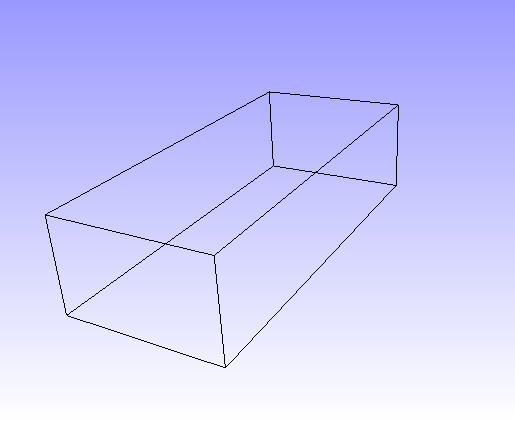

Move Model As
VCollab Presenter users can set different performance modes of rendering while interacting with a scene through a motion model using Move Model As. The options found under this tool increase performance during the motion model.
Options
As Is: This is the default option and lets a user to change from any other performance mode to current display mode.
Single Bound box: A single bounding box which contains all parts of the model displayed in the motion model.
Part Bound boxes: Individual bounding boxes are displayed for each part in the motion model.
Detail cull Settings…: This helps users to view parts based on the model volume. Users can view parts which are equal or above volumetrically with model volume. The default detail cull percentage is 30%.

Feature Edges: Shows model feature edges during motion model.
Set Rotation Center This option displays a model rotation center and allows the user to pick a point in the model and set it as a model rotation center. Short Cut : Alt + Mouse Left Button Down
As Is Single Bounding Box

Part Bounding Boxes 30% Detailed Cull

Feature Edges

Steps to set rotation center
Click MoveModelAs | Set Rotation Center from the context menu.
Use the shortcut Alt + Left click.
It displays the current rotation center of the model.
Click on any point on the model.

The point will be set as rotation center.
Now rotate the model and notice the changes.

Click Reset from the context menu to set the model centre as rotation center.
Reset will reset not only the rotation center, but also all viewing functionality parameters to defaults.